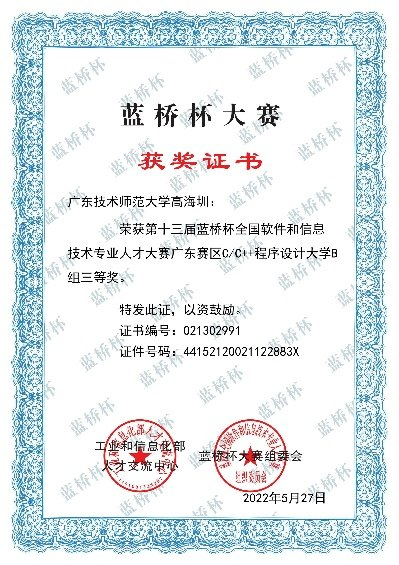

我更关注可评测、可部署、可持续迭代的大模型系统。近期工作主要围绕安全审核链路、语音客服 Agent、数据生产 Agent 和 SQL 执行反馈展开。
🧱 技能描述
- 面向多轮业务对话构建 Agent 工作流，覆盖节点编排、语义路由、打断恢复和兜底回收。
- 构建行业大模型训练用的数据生产与清洗 Agent，将 Agent 审查与确定性工具修复结合。
- 熟悉 SFT/LoRA、vLLM 推理评测、RAG 增强过滤和成本感知模型路由。
💼 工作经历
欧派智能家居语音客服 Agent
- 面向电商语音客服线索收集，设计可配置节点编排与状态流转机制。
- 支持跳答、抢答、反悔、打断和跨节点补充等复杂多轮交互。
博文行业大模型数据生产与质量治理建设
- 构建从数据生产、质量清洗到模型训练的完整闭环。
- 基于清洗数据训练博文 4B 行业大模型，并用 vLLM 搭建评测链路，核心任务准确率达到 80%+。
大模型保险箍
- 面向大模型输入输出安全，构建分层审核与动态调度机制。
- 高成本组件调用占比下降 35%+，平均时延降低 25%+。
📄 论文与专利
第一作者发表，论文详情整理中。
第二作者发表，论文详情整理中。
学生一作投稿，under review。
比赛经历
亚军 · 队长 · 2025
TGAC 腾讯游戏算法大赛 · 数智决策科学赛道
腾讯游戏算法大赛面向真实业务决策与智能分析场景。我们围绕 Text2SQL 数据构建、监督微调、GRPO 探索和 StarRocks 执行反馈搭建方案，最终获得赛道亚军。
- 构建高质量 Text2SQL 数据集，并用可执行反馈清洗歧义 SQL 标注。
- 以 SFT 作为稳定基线，再探索基于执行奖励的 GRPO 修正答案。
- 使用 StarRocks 验证 SQL 执行、比较结果集，并闭合数据、模型、反馈链路。


第 3 名 / 1543 支队伍 · 2025
天池极客挑战 · 用户购买行为预测
赛题基于用户、商品和行为日志预测后续购买行为。方案重点放在时间窗口特征、用户/商品/类目统计、时序切分验证和模型融合上。
- 围绕点击、收藏、加购、购买等行为构建时间窗口统计特征。
- 使用时序验证降低榜单过拟合，提升离线与线上表现的一致性。

省三等奖 · 2022
蓝桥杯 · C/C++ 程序设计大学 B 组
面向算法实现与程序设计能力的竞赛，获广东赛区 C/C++ 程序设计大学 B 组省三等奖。

🗂 项目概览
项目
重点
结果
语音客服 Agent
流程编排
提升多轮稳定性
行业大模型数据
数据生产与清洗
核心任务 80%+
大模型保险箍
安全路由
时延降低 25%+